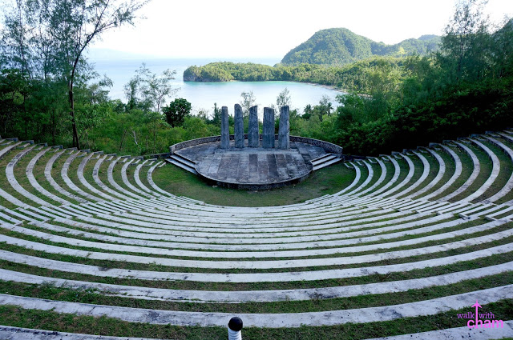
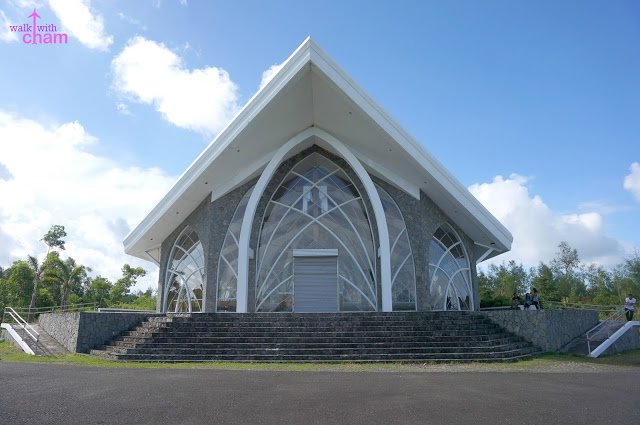
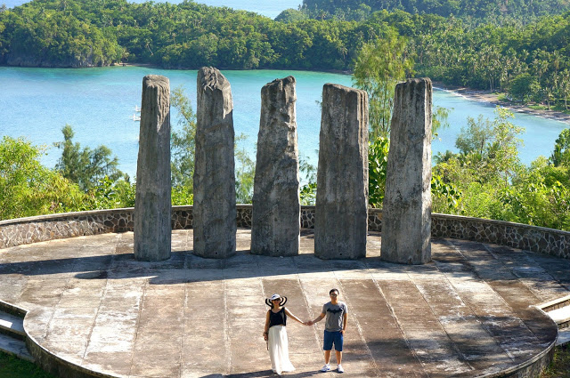

Cagraray Eco-Energy Park is an ecological park that features trekking, zip lines, a swimming pool, and an open-air amphitheater overlooking the picturesque Albay Gulf. Roughly an hour away from Legazpi City, Cagraray Island, where the eco-park is situated, is also known for the renowned Misibis Bay
Bacacay, Albay